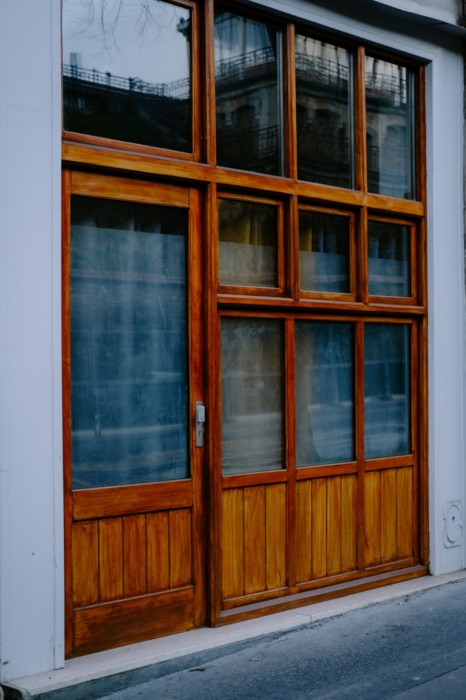

Wir retten Fenster, die unmöglich zu reinigen scheinen
Ein Lokal, das geschlossen oder in Umbau war, stellt Herausforderungen, die eine herkömmliche Reinigung nicht lösen kann. Wir kümmern uns um:
Entfernung von Bauresten: Wir beseitigen sicher Zement-, Gips-, Farbflecken und Spritzer von Fassadenarbeiten, ohne das Glas zu zerkratzen.
Entfernung von Folien und Klebstoffen: Wir entfernen die Werbung des Vormieters und die in der Benidorm-Sonne eingetrockneten Klebereste.
Entkalkung und Salzsteinentfernung: Wenn das Lokal längere Zeit geschlossen war, kann das Glas durch Salz „verbrannt" sein. Wir verwenden professionelle Restaurierungsprodukte.

Warum Sie uns vor der Eröffnung beauftragen sollten (Vorteile)
Eröffnen Sie Ihr Geschäft vom ersten Tag an mit dem besten Image
Die Investition in eine Geschäftsübernahme ist hoch; lassen Sie nicht zu, dass schmutzige Fenster Ihren ersten Markeneindruck ruinieren.
Extreme Schnelligkeit: Wir wissen, dass Sie einen Eröffnungstermin haben. Wir passen uns Ihren Zeitplänen an, damit die Fenster das Letzte sind, was vor dem Durchschneiden des Bandes glänzt.
Professionelle Ergebnisse: Ein professionell gereinigtes Glas hält länger und sieht besser aus.
Zeitersparnis: Konzentrieren Sie sich auf Ihren Bestand, Ihr Personal und Ihre Genehmigungen – wir sorgen dafür, dass das Licht Ihr neues Lokal durchflutet.
Weit mehr als nur Fenster
Viele Gründer in Benidorm nutzen unseren Besuch und beauftragen uns zusätzlich mit der Reinigung von:
Schildern und Leuchtreklamen: Damit Ihre Marke Tag und Nacht strahlt.
Rahmen und Metallrollläden: Wir entfernen den angesammelten Staub aus den Sicherheitsverschlüssen.
Innenspiegel und Umkleidekabinen: Unverzichtbar für Modegeschäfte und Schönheitssalons.
Wir kennen jedes Lokal im Zentrum von Benidorm
In +35 Jahren haben wir dieses Lokal wahrscheinlich schon einmal gereinigt. Wir kennen die Glasarten der Gegend und wissen, wie wir sie behandeln, damit sie aussehen wie am ersten Tag – egal, wie viele Jahre sie vernachlässigt wurden.
Häufige Fragen zur Reinigung bei Neueröffnung
Können Sie reinigen, wenn noch Maler oder Maurer arbeiten?
Wir empfehlen, immer als Letzte zu kommen. Wir können uns jedoch mit Ihrem Renovierungsteam abstimmen, um ein perfektes Endergebnis zu gewährleisten.
Stellen Sie eine offizielle Rechnung für meine Gründungsbuchhaltung aus?
Selbstverständlich. Wir sind ein ordnungsgemäß gegründetes Unternehmen und alle unsere Leistungen beinhalten die erforderliche Dokumentation für Ihre Eröffnungsausgaben.
Ihr Erfolg beginnt mit einem klaren Blick
Lassen Sie nicht zu, dass der Schmutz der Vergangenheit Ihr zukünftiges Geschäft überschattet. Kontaktieren Sie die Experten für Geschäftsübergaben in Benidorm.